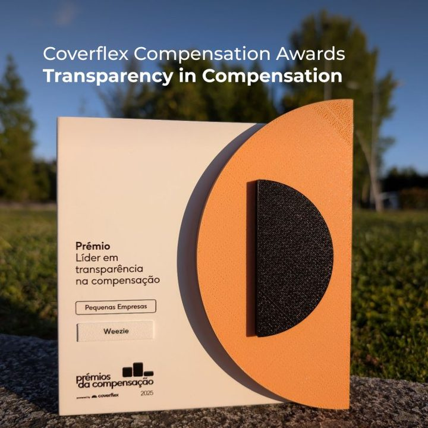
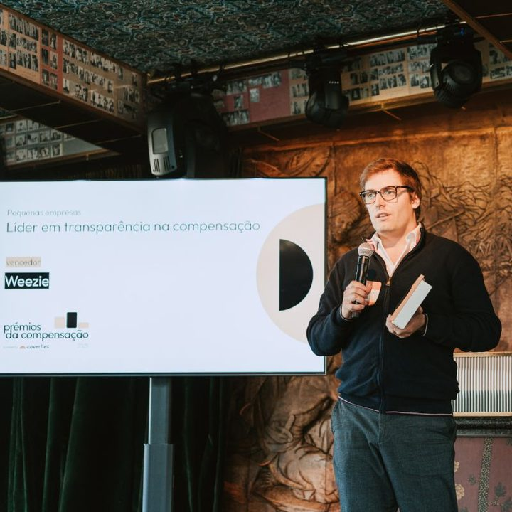

Hi there,
here's the audit trail behind my CV
I'm Rui. I started in audit in 2013, checking other people's numbers. Today I'm CFO and Head of HR at a venture-backed startup, and through VCLevel I do the same job for smaller companies.
Open to finance leadership roles, in Porto or remote. Get in touch, read the CV or play one of the games.
Follow the trailIt started with reading the numbers
Financial audit at PwC, then Claranet and ITEN
Banks, insurers and venture capital funds
At PwC I audited some of the most regulated balance sheets there are, under IFRS. It gave me the habit I still work by: before you trust a number, find out where it came from.
At Claranet and ITEN I moved into the business itself: operational finance, reporting and change management. The new part was working with clients and other teams until a report changed what someone did on Monday.
- IFRS audit
- Reporting
- Change management
- Stakeholders
Working paperTested
| Loans to customers | agreed to source | ✓ |
| Technical provisions | recalculated | ✓ |
| Fund valuations | confirmed | ✓ |
| Operating budget | owned | ✓ |
| Client relationship | built | ✓ |
Note: a number only matters once someone acts on it.
Then, the cases without a template
Associate Manager, Capital Markets & Accounting Advisory, PwC
A task force serving the whole of PwC Portugal
I went back to PwC to work on the analyses nobody in the firm had a precedent for yet.
I advised on IFRS accounting for transactions, ran cost of capital studies, supported prospectus and deal documentation, built valuation and impairment models, and did due diligence on hedge fund investments.
- IFRS 3 / 9 / 15 / 16
- Valuation
- Impairment
- Due diligence
in transactions advised on under IFRS
Every step moved me closer to where decisions get made. Then I stopped advising and took the seat.
From checking to owning
CFO & Head of HR, Weezie
Venture-backed software for fibre-network operators
For the first time the numbers weren't someone else's to review. I built the 12-month rolling forecast and the 36-month model, tied OKRs to unit economics, and set up quarterly board and investor reporting.
In 2024 I led our €3M seed round: the model, the data room and the investor materials. It added 18 months of runway and paid for the go-to-market and hiring plan.
I also run people: hiring pipelines, 15/45/90-day onboarding with named owners, and career steps tied to delivery. In 20 months, nobody in a team of 23 left voluntarily.
- FP&A
- Fundraising
- Treasury
- Compensation
- Power BI
Illustrative shape, not company figures.
Insert a cartridge
Seven small games, each built on something I've done for real: tracing a number back to its source, closing the month, keeping cash ahead of payroll, raising a seed round with eight months of runway left.
They're toys, but the rules come from the job. Turn the sound on for the music.
RUNWAY needs JavaScript.
The rest of the page doesn't.
A or Space to play · arrows or swipe to move · B or Esc for the menu


Transparency in Compensation Award, 2025
Coverflex Compensation Awards, small-company category. Given to Weezie for the company-wide compensation framework and salary bands I designed there.
The same job, in other people's industries
Founding partner, VCLevel
Clinics and health practices, wine, food and drink, PR agencies, and others
I'm a founding partner of VCLevel, which puts senior finance, operations and people work into companies that don't need a full-time CFO yet. I take the finance seat: the model, the pricing, the cash forecast, the conversation with the bank.
Most of these businesses have never had a finance person look at them from the inside. The first question they bring is rarely the one that matters, so the work usually starts with a diagnosis.
- Diagnosis
- Pricing
- Company structure
- Break-even
- Public funding
PsychologyCase 1 of 7
The question on the table
“We need to bill more.”
What the numbers showed
Billing wasn't the problem. Diary occupancy and the price per session were. We started with a performance diagnosis, not a sales push.
Know what an hour is worth first.
PhysiotherapyCase 2 of 7
The question on the table
Sole trader or a company, before the first patient?
What the numbers showed
The right answer came from the three-year plan, not from the tax saved in year one.
Choose the structure for year three.
DentalCase 3 of 7
The question on the table
Are our prices right for agreement patients?
What the numbers showed
The prices assumed about seven times as many agreement patients as the clinic actually had. No-shows were a second leak in the margin.
Check the data before the price.
Medical practiceCase 4 of 7
The question on the table
What do we need to know before signing the lease?
What the numbers showed
Two numbers: where break-even is, and how many months you can last until you reach it. Outside the big cities, add the incentives for the interior, and a company that can take in partners later.
The lease is the first big decision.
PR & communicationsCase 5 of 7
The question on the table
The partners still invoice as freelancers. When do they become a company?
What the numbers showed
When to incorporate, and how to pay out profit without starving growth. At this stage a bank of hours worked better for clients than a monthly retainer.
Sell hours before retainers.
WineCase 6 of 7
The question on the table
Can we apply for EU funding?
What the numbers showed
The application asked for management numbers the business had never had. Building them was the real gain, whatever the grant decided.
- Distribution
- Export
- Cellar door
- Wine club
The form was the business plan nobody had written.
Food & drinkCase 7 of 7
The question on the table
Which national funding can we apply for?
What the work was
The applications for national funds, and the financial management and control the business runs on once the money arrives.
Funding comes with reporting.
Real cases, shared with the clients’ permission: sector only, no names or places, and ratios rather than amounts.
Finance close to the decisions
A finance leadership role where the CFO is in the room when the plan gets made, and where people and pay are part of the job rather than someone else's department.
You'll probably want to talk to me if
- You're raising in the next twelve months and the model isn't ready
- Closing the month still takes weeks
- You're hiring faster than you can decide what to pay
- Your business isn't SaaS, and most finance people you meet have only seen SaaS
That's my trail. I'd like to hear where yours is going
Portuguese, English and Italian. Based in the north of Portugal, open to remote.
Let's talkruimcamposgomes@gmail.comLinkedInCV (PDF)
I built this page with AI, the same way I now build most client models: the tool writes the first draft, and I check every number. Each circled letter shows where a number comes from, so you can check them too.
Sources
Source B
€500M in transactions advised on under IFRS
PwC Capital Markets & Accounting Advisory, 2018–2022. The clients are confidential; I'm happy to walk through the types of deal.
Source C
€3M seed round in 2024, 18 more months of runway
€3M round led by GED Ventures Portugal, February 2024: ECO, 6 Feb 2024. Runway figures on request.
Source D
−34% close time, −28% FX exposure, 20 months with zero voluntary attrition across 23 people
Weezie management reporting; before-and-after figures on request. The attrition figure is public: my LinkedIn post, Aug 2025.
Source E
Transparency in Compensation Award, 2025
Coverflex Compensation Awards 2025 (Prémios da Compensação), small-company category. Photos above, Weezie on LinkedIn, May 2025.